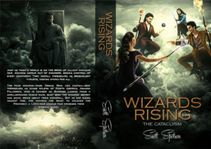

From the journal
Reviewer Posted Positive Review from Hospital Bed!
Wow, how flattered can you get... when someone staying in a hospital badly wants to post a review because she loved reading the book! Thank you!
"Scott Spotson is a new author for me, but based on his Wizards Rising: The Cataclysm, I’m promising myself that we will become well acquainted. The book’s blurb really tells all you need to know about it. Frankly the novel truly is both thought provoking and fun. It was well written and with a really interesting plot that was imaginatively different. Amanda Fullteron, the lead here, is perfectly crafted and her supporting cast is also superb. Totally fun yet makes you think a bit. A pretty darn good combination. But for the fact that I’m literally dictating this review to my husband from my hospital bed I could go on and on with praises - the book definitely deserves it. Since I can’t do that I will simply note that the book is most definitely one to read, it is easy to highly recommend."
https://www.amazon.com/Wizards-Rising-Cataclysm-Scott-Spotson-ebook/dp/B015K48BPQ
"Scott Spotson is a new author for me, but based on his Wizards Rising: The Cataclysm, I’m promising myself that we will become well acquainted. The book’s blurb really tells all you need to know about it. Frankly the novel truly is both thought provoking and fun. It was well written and with a really interesting plot that was imaginatively different. Amanda Fullteron, the lead here, is perfectly crafted and her supporting cast is also superb. Totally fun yet makes you think a bit. A pretty darn good combination. But for the fact that I’m literally dictating this review to my husband from my hospital bed I could go on and on with praises - the book definitely deserves it. Since I can’t do that I will simply note that the book is most definitely one to read, it is easy to highly recommend."
https://www.amazon.com/Wizards-Rising-Cataclysm-Scott-Spotson-ebook/dp/B015K48BPQ
